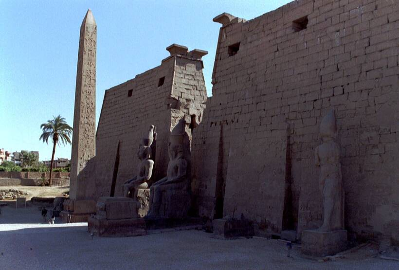
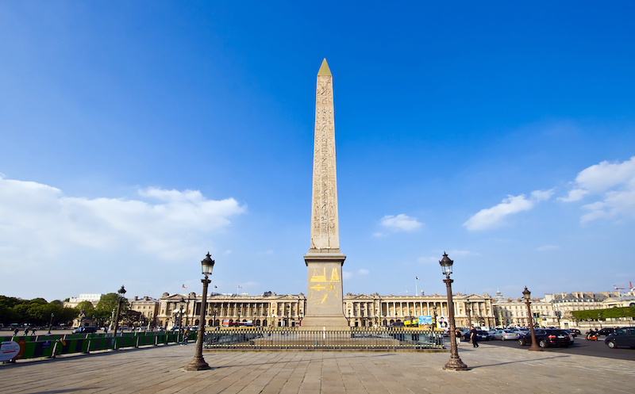
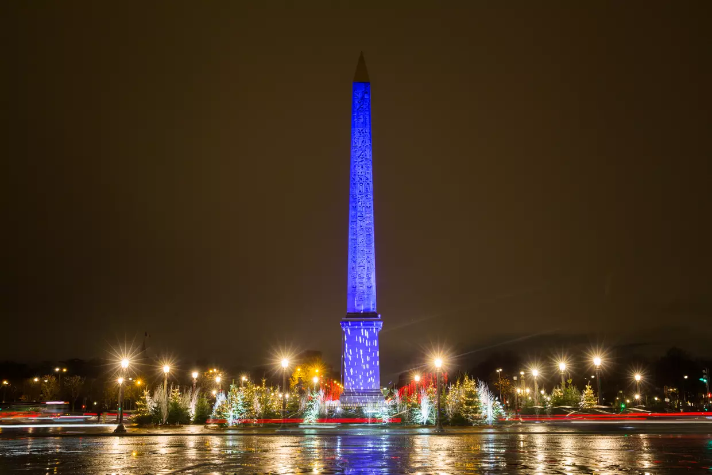

.png)
Info
Histoire
Galerie
Infos
Ramsès II
XIXe dynastie
Syénite
Hiéroglyphes
250 tonnes
23 mètres
Temple d'Amon (Louxor, Égypte)
Place de la Concorde (Paris)
Louis-Philippe Ier
25 octobre 1836
Monument Historique (1937)
Histoire
Coiffé de sa pyramide dorée, l'obélisque se dresse de ses 22 mètres de haut au centre de l'une des places les plus fréquentées de la capitale, celle de la Concorde. Une position bien méritée pour l'emblématique colonne qui peut se targuer, avec ses 3.300 ans, d'être le plus vieux monument de Paris. C'est en 1836 que l'obélisque a fait son arrivée en grande pompe sur la place de la Concorde après un transport des plus rocambolesques. Car la sculpture vient de loin, très loin : elle ornait autrefois l'entrée du temple d'Amon à Louxor. Un édifice dont la construction remonte aux XVIIIe et XIXe dynasties (entre -1500 et -1180) de l'antiquité égyptienne. En 1829, Méhémet Ali, alors vice-roi d'Egypte, décide de faire cadeau de la colonne et de sa jumelle à Charles X et à la France, en signe de bonne entente. Devant l'ampleur de la tâche, il est décidé de n'en ramener qu'une seule des deux dans un premier temps. Et c'est Jean-François Champollion, premier déchiffreur des hiéroglyphes, qui jette son dévolu sur l'obélisque de droite.
Deux ans d'attente et de périple
La structure est abattue et entame son voyage sur un navire spécialement conçu à son transport. Il faut dire qu'en plus de ses 22 mètres de haut, le monolithe en syénite - une roche rose proche du granit - pèse pas moins de 230 tonnes. Il faut également prendre garde à ses faces ornées de hiéroglyphes, encore très bien préservées, malgré leur plus de trois millénaires.
Décembre 1831 : la cargaison embarque sur le Nil et connaît déjà de premières difficultés. L'équipage doit patienter pendant huit mois avant que le fleuve en crue ne laisse la barge flotter jusqu'à son embouchure. Après avoir affronté bancs de sable et tempêtes d'hiver, elle arrive à Toulon en mai 1833.
Les mois suivants, la cargaison contourne l'Espagne, fait escale à Cherbourg et remonte la Seine depuis Rouen pour enfin atteindre sa destination finale, Paris, le 23 décembre 1833. Sauf que les péripéties sont loin d'être terminées pour la colonne. A son arrivée, on se rend compte que son socle d'origine a de quoi choquer les esprits encore prudes de la société française.
La base carrée présente en effet une série de babouins dressés sur leurs pattes arrière, les mains en l'air, et le sexe clairement visible. La pièce est envoyée dans les collections du musée du Louvre et un autre bloc est commandé et fabriqué en Bretagne. Il faudra finalement près de trois ans pour que l'obélisque trône enfin place de la Concorde.
Un lieu symbolique
Son installation a lieu le 25 octobre 1836 devant quelque 200.000 Parisiens à cet endroit qui n'a pas été choisi par hasard. "On est sur l'ancienne place Louis-XV. À quelques mètres ont été guillotinés Louis XVI et Marie-Antoinette. Une place d'affrontement où la mort a régné", a rappelé au Parisien Laurent Roturier, directeur régional des affaires culturelles.
"Et le symbole qui est donné en disant : on va installer sur cette place un obélisque qui vient de très loin géographiquement et dans le temps, c'est un symbole extraordinaire de paix. On retrouve ainsi la place de la Concorde. C'est d'abord pour réconcilier les Français de l'époque", a-t-il ajouté. L'obélisque se trouve en plus non loin de la pyramide du Louvre. Autre emblème de la capitale.
Jean-François Champollion, mort en 1832, n'aura jamais l'occasion de contempler les mètres de hiéroglyphes de la colonne sur la place parisienne. Mais d'autres égyptologues auront l'occasion de se pencher sur ses faces, qui arborent notamment un cartouche du pharaon Ramsès II, pour en proposer une traduction.
.jpg)
L'obélisque n'a jamais été rejoint par son jumeau. Mais il a connu depuis sa mise en place quelques modifications dont la création du pyramidion doré à son sommet et une restauration menée en 1962 sous l'initiative d'André Malraux. Soixante ans plus tard, c'est un nouveau coup de jeune que va connaître le plus vieux monument de Paris.
En pleine restauration
"Ce n'est pas une dégradation importante qui a amené cette restauration, mais le souhait [...] de redonner sa lumière, sa tonalité originale à cet obélisque qui a évidemment subi les affres de la pollution, en particulier automobile", a détaillé dans un entretien au Parisien Roselyne Bachelot, ministre de la Culture.
"Cela va nous permettre de retrouver une couleur beaucoup plus rose et de procéder à la restauration du pyramidion, qui orne le sommet, ainsi que du socle et de l'emmarchement", a-t-elle ajouté. Ceci permettra également de renforcer les parties plus faibles et de nettoyer les hiéroglyphes encrassés.
"Une fois nettoyé, on ne verra plus aussi bien les hiéroglyphes", a précisé Vincent Rondot, directeur du département des antiquités égyptiennes du Louvre. "Mais la pierre sera plus brillante. Et le soleil jouera davantage comme le souhaitaient les anciens Égyptiens. Les hiéroglyphes n'apparaîtront que lorsque la lumière sera favorable".
L'opération de restauration d'un coût d'un million d'euros devrait durer six mois. "Au mois de juin, on pourra voir dans sa toute beauté l'obélisque de Louxor, notre obélisque de la Concorde", s'est réjouie Roselyne Bachelot. Et le monument pourra accueillir comme chaque année les estrades des célébrations du 14 Juillet.
L'initiative s'inscrit dans les célébrations du bicentenaire du déchiffrage des hiéroglyphes par Champollion. C'est en septembre 1822 que l'égyptologue a annoncé avoir percé le secret des écritures égyptiennes et publié ce qui allait devenir le texte fondateur du déchiffrement des hiéroglyphes.

